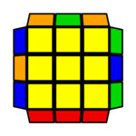
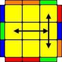

My 3 favorite speedcubing algorithms
These are my favorite algorithms to perform during a speedsolve. They are part of the popular CFOP method.-

Ub Permutation. This permutation is one of the easiest and shortest PLL algorithms. I like it better than Ub because it doesn't require backflick finger tricks. M2 U' M' U2 M U' M2
-

T permutation. Even though it's a little long, I find this to be the most satisfying and consistent algorithm to execute. It flows super fast and has great finger tricks. Most of my PBs ended with a T-perm, if not a PLL skip 😅. R U R' U' R' F R2 U' R' U' R U R' F'
-
OLL 23 ("U-OLL"). Definitely not the easiest OLL to execute, but it is extremely fast to recognize, and I personally find the algorithm to be very satisfying to perform. R2 D R' U2' R D' R' U2' R'
Back to top